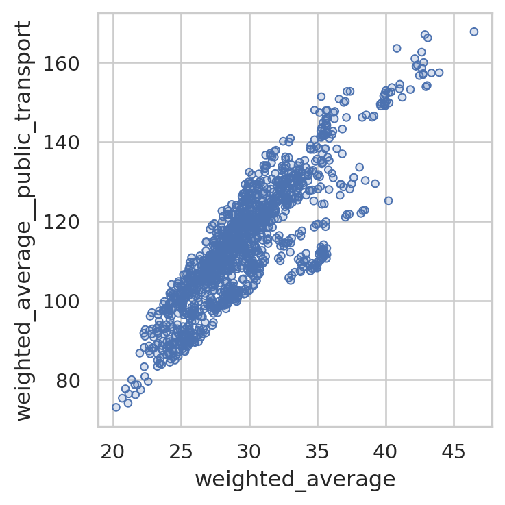
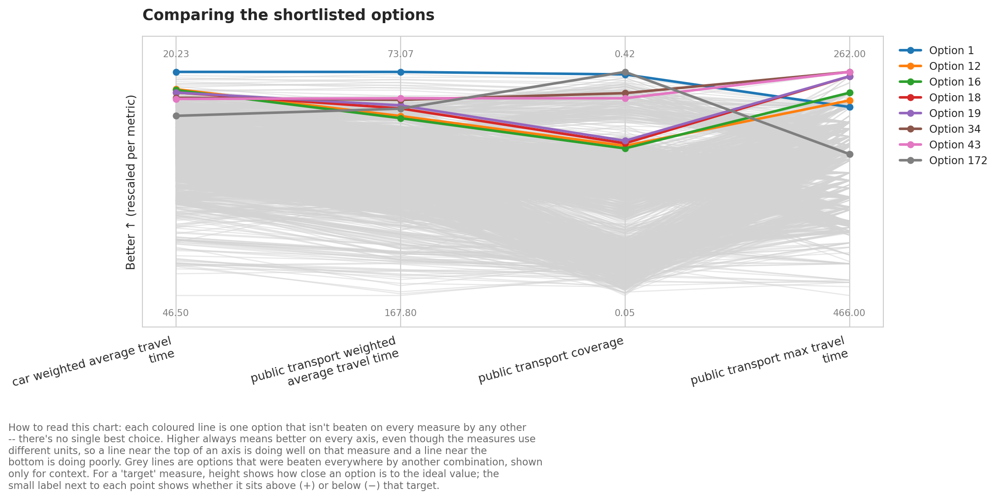
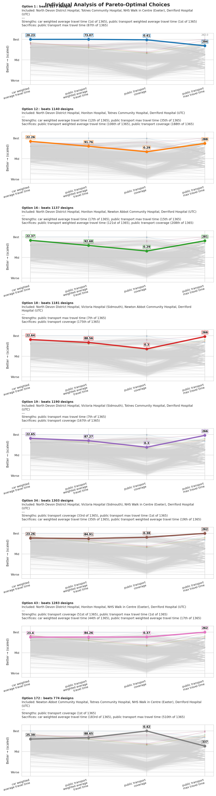
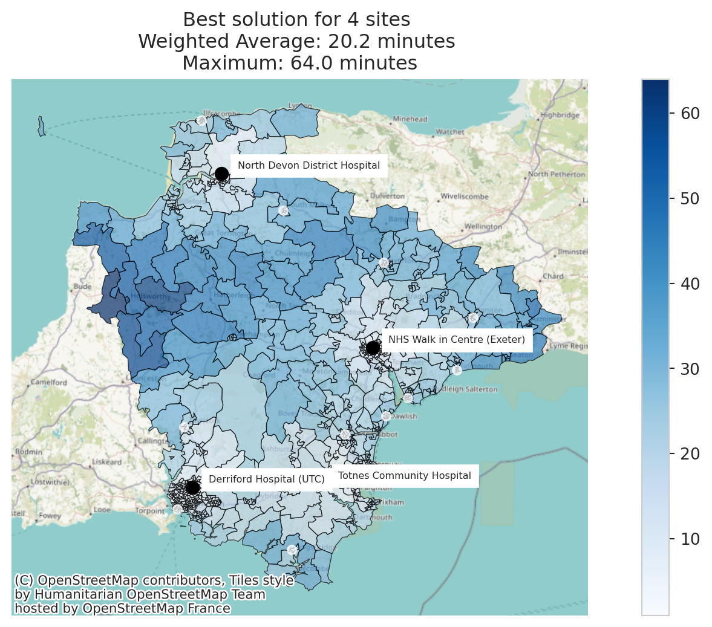
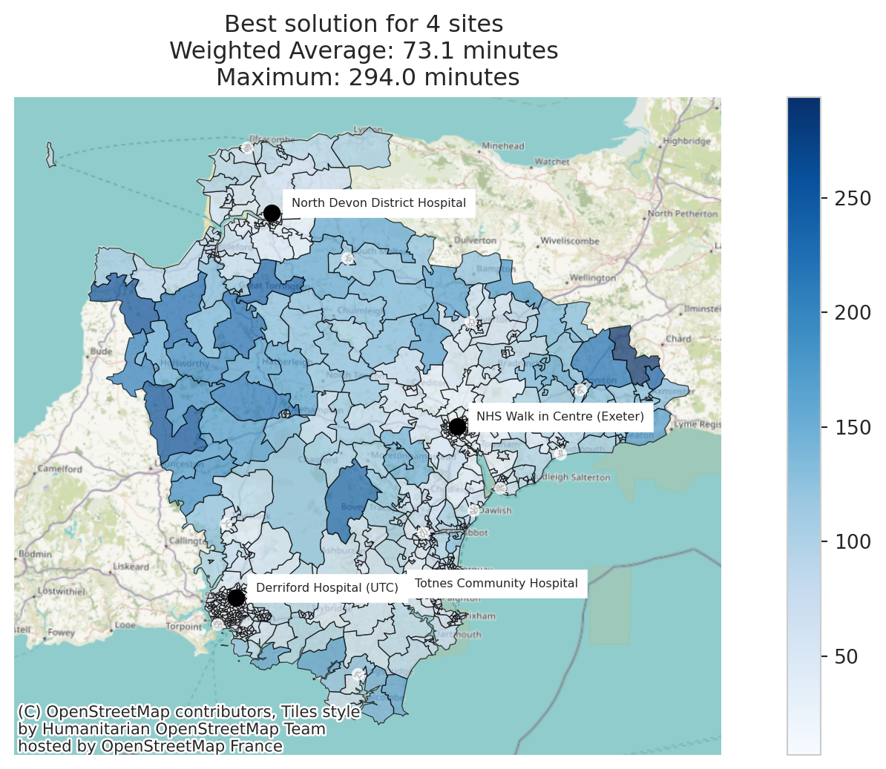

from lokigi.site import SiteProblem
from lokigi.multiobjective import ParetoMetricMultiple Travel Matrices
Sometimes we want to weigh up more than one travel mode at once – for example, how a set of sites performs for car travel and for public transport, in a single ranked list of candidate solutions.
The ‘comparing solutions’ example shows how to do this by solving the same problem twice (once per mode, via problem.copy()) and then reconciling the two independently-ranked SiteSolutionSets with SolutionComparator. That approach is the right one when the two modes genuinely need separate optimisations – but the two solution sets are ranked over different orderings, and SolutionComparator.find_balanced_solution() can only reconcile them heuristically, by scoring how much their selected sites overlap.
This example instead registers public transport as a secondary travel matrix on a single problem. The primary matrix (car) still drives which combinations of sites get searched and pruned, but every solution solve() returns also carries public transport metrics alongside the car ones – so we get one ranked list, with both modes’ numbers side by side, ready to trade off directly with a Pareto front.
As with the comparing solutions example, we’ll use the Devon minor injury unit sites, but this time we only need a single SiteProblem – we don’t need to .copy() it per mode.
problem = SiteProblem()
problem.add_sites(
"../../../sample_data/devon_mius.geojson",
candidate_id_col="Facility_Name"
)
problem.add_region_geometry_layer(
"https://github.com/hsma-programme/h6_3c_interactive_plots_travel/raw/main/h6_3c_interactive_plots_travel/example_code/LSOA_2011_Boundaries_Super_Generalised_Clipped_BSC_EW_V4.geojson",
common_col="LSOA11NM"
)Now we add our primary travel matrix – car – exactly as usual, via add_travel_matrix(). This is the matrix that solve() will optimise against.
problem.add_travel_matrix(
travel_matrix_df="../../../sample_data/devon_miu_travel_matrix.csv",
source_col="from_id",
unit="minutes",
)Then we register public transport as a secondary travel matrix via add_secondary_travel_matrix(). It takes the same travel_matrix_df/source_col/unit arguments as add_travel_matrix(), plus a required label (used to name every metric column this matrix contributes) and an optional per-matrix threshold_for_coverage – public transport journeys are typically slower, so we’ll use a more generous 60-minute threshold here, independent of whatever threshold we pass to solve() for the primary (car) matrix.
You can register as many secondary matrices as you like this way – each one just needs its own unique label.
problem.add_secondary_travel_matrix(
travel_matrix_df="../../../sample_data/devon_miu_travel_matrix_public_transport_extended.csv",
source_col="from_id",
label="public_transport",
unit="minutes",
threshold_for_coverage=60,
)Now we solve once. The threshold_for_coverage=20 here only applies to the primary (car) matrix, since public transport already has its own threshold of 60 minutes set at registration time above.
solution = problem.solve(p=4, threshold_for_coverage=20)/__w/lokigi/lokigi/lokigi/site.py:757: UserWarning:
No demand data was provided. Demand from all regions has been assumed to be equal.If you wish to override this, run .add_demand() to add your site dataframe before running .solve() again.You can use the .show_demand_format() to see the expected format beforehand.
Let’s look at the column names now available. Alongside the usual car-based metrics (weighted_average, max, proportion_within_coverage_threshold, …), every one of those core metrics now also has a public_transport-suffixed sibling.
solution.show_solutions_colnames()Index(['solution_rank', 'site_names', 'site_indices', 'coverage_threshold',
'weighted_average', 'unweighted_average', '90th_percentile', 'max',
'total_cost', 'proportion_within_coverage_threshold',
'proportion_regions_within_coverage_threshold',
'weighted_by_equity_group', 'unweighted_by_equity_group',
'coverage_by_equity_group', 'coverage_regions_by_equity_group',
'max_cost_by_equity_group', 'gap_absolute_weighted',
'gap_relative_weighted', 'avg_lower_third_bins',
'avg_middle_third_bins', 'avg_upper_third_bins', 'inter_tertile_ratio',
'gap_absolute_description', 'gap_relative_description',
'inter_tertile_description', 'problem_df',
'weighted_average__public_transport',
'unweighted_average__public_transport',
'90th_percentile__public_transport', 'max__public_transport',
'proportion_within_coverage_threshold__public_transport',
'proportion_regions_within_coverage_threshold__public_transport',
'gap_absolute_weighted__public_transport',
'gap_relative_weighted__public_transport',
'avg_lower_third_bins__public_transport',
'avg_middle_third_bins__public_transport',
'avg_upper_third_bins__public_transport',
'inter_tertile_ratio__public_transport'],
dtype='str')solution.show_solutions().head()| solution_rank | site_names | site_indices | coverage_threshold | weighted_average | unweighted_average | 90th_percentile | max | total_cost | proportion_within_coverage_threshold | ... | 90th_percentile__public_transport | max__public_transport | proportion_within_coverage_threshold__public_transport | proportion_regions_within_coverage_threshold__public_transport | gap_absolute_weighted__public_transport | gap_relative_weighted__public_transport | avg_lower_third_bins__public_transport | avg_middle_third_bins__public_transport | avg_upper_third_bins__public_transport | inter_tertile_ratio__public_transport | |
|---|---|---|---|---|---|---|---|---|---|---|---|---|---|---|---|---|---|---|---|---|---|
| 0 | 1 | [North Devon District Hospital, Totnes Communi... | [0, 6, 7, 11] | 20 | 20.23 | 20.23 | 33.0 | 64.0 | NaN | 0.51 | ... | 125.0 | 294.0 | 0.41 | 0.41 | None | None | None | None | None | None |
| 1 | 2 | [North Devon District Hospital, Newton Abbot C... | [0, 5, 7, 11] | 20 | 20.68 | 20.68 | 34.4 | 64.0 | NaN | 0.51 | ... | 131.4 | 294.0 | 0.41 | 0.41 | None | None | None | None | None | None |
| 2 | 3 | [Totnes Community Hospital, NHS Walk in Centre... | [6, 7, 11, 13] | 20 | 20.91 | 20.91 | 34.0 | 68.0 | NaN | 0.48 | ... | 135.4 | 329.0 | 0.38 | 0.38 | None | None | None | None | None | None |
| 3 | 4 | [North Devon District Hospital, Totnes Communi... | [0, 6, 7, 10] | 20 | 21.10 | 21.10 | 34.0 | 64.0 | NaN | 0.47 | ... | 127.0 | 294.0 | 0.40 | 0.40 | None | None | None | None | None | None |
| 4 | 5 | [Totnes Community Hospital, NHS Walk in Centre... | [6, 7, 11, 12] | 20 | 21.16 | 21.16 | 37.4 | 70.0 | NaN | 0.50 | ... | 135.4 | 308.0 | 0.39 | 0.39 | None | None | None | None | None | None |
5 rows × 38 columns
Exploring the trade-off with a Pareto front
Because both modes’ metrics live on the same ranked list, we can trade them off directly with the same Pareto tooling used for e.g. cost vs equity in the Pareto fronts example – there’s nothing secondary-matrix-specific about compute_pareto_front() or plot_simple_pareto_front_pairs(), they just consume whichever solution_df columns you point them at.
solution.plot_simple_pareto_front_pairs(
x_axis="weighted_average",
y_axis="weighted_average__public_transport",
)
We can bring in more metrics at once with ParetoMetric – here, car weighted average travel time, public transport weighted average travel time, and public transport coverage.
metrics = [
ParetoMetric(column="weighted_average", direction="lower_better",
label="car weighted average travel time", unit="minutes"),
ParetoMetric(column="weighted_average__public_transport", direction="lower_better",
label="public transport weighted average travel time", unit="minutes"),
ParetoMetric(column="proportion_within_coverage_threshold__public_transport", direction="higher_better",
label="public transport coverage"),
ParetoMetric(column="max__public_transport", direction="lower_better",
label="public transport max travel time", unit="minutes"),
]
solution.compute_pareto_front(metrics=metrics)
solution.pareto_summary()| solution_rank | weighted_average | weighted_average__public_transport | proportion_within_coverage_threshold__public_transport | max__public_transport | |
|---|---|---|---|---|---|
| 0 | 1 | 20.227723 | 73.074965 | 0.413013 | 294.0 |
| 1 | 12 | 22.260255 | 91.759547 | 0.294201 | 288.0 |
| 2 | 16 | 22.367751 | 92.676096 | 0.289958 | 281.0 |
| 3 | 18 | 22.643564 | 88.555870 | 0.298444 | 266.0 |
| 4 | 19 | 22.649222 | 87.267327 | 0.302687 | 266.0 |
| 5 | 34 | 23.261669 | 84.906648 | 0.381895 | 262.0 |
| 6 | 43 | 23.403112 | 84.260255 | 0.373409 | 262.0 |
| 7 | 172 | 25.390382 | 88.647808 | 0.417256 | 337.0 |
solution.plot_pareto_summary(width_multiplier=3);
solution.plot_pareto_facets();
Plotting a secondary matrix directly
Every travel-related plot accepts a matrix= keyword to switch from the primary (car) matrix to a registered secondary one. For example, here’s the public transport travel time distribution for the best car-ranked solution, instead of its car travel times:
solution.plot_travel_time_distribution(matrix="public_transport", top_n=1)The same matrix= keyword works on plot_best_combination(), plot_n_best_combinations(), plot_solution_comparison(), check_solution_equity(), plot_top_n_solution_equity(), and plot_combination_by_equity().
Maps
This ability to specify the matrix also applies to map plots.
If we do not pass a matrix argument, it will default to the primary travel matrix.
Car
solution.plot_best_combination();
Public Transport
solution.plot_best_combination(matrix="public_transport");
Ranking on a secondary matrix
Because weighted_average__public_transport is just another solution_df column, it can be used anywhere a column name is accepted – including rank_on, to re-sort the existing set of solutions by public transport performance instead of car performance.
solution.return_best_combination_site_names(rank_on="weighted_average__public_transport")['North Devon District Hospital',
'Totnes Community Hospital',
'NHS Walk in Centre (Exeter)',
'Derriford Hospital (UTC)']A caveat worth knowing about: rank_on only re-sorts the candidates that solve() already searched and kept. If you ran solve(..., brute_force_keep_best_n=...), discarded combinations were pruned using car performance alone – so a public_transport-ranked result over what survives is not necessarily the true best combination for public transport. When you’re planning to explore secondary-matrix trade-offs, it’s safest to solve with every combination retained (the default, or brute_force_keep_best_n=None), exactly as we’ve done in this example.
Which approach should I use?
- Secondary travel matrices (this example): one
solve(), one ranked list, with every registered matrix’s metrics available side by side. Best when you want to explore trade-offs between modes for the same candidate solutions – e.g. with a Pareto front. problem.copy()+SolutionComparator(see the comparing solutions example): two independent solves, each optimised (and pruned) entirely on its own mode. Best when the two modes genuinely need separate optimisations – e.g. very different candidate site sets, capacities, or objectives per mode – and you wantfind_balanced_solution()’s rank-overlap heuristic to reconcile them afterwards.